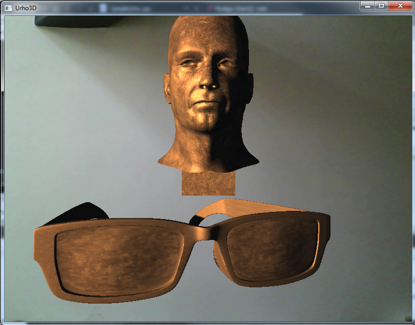
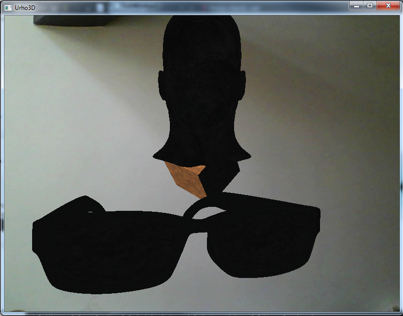
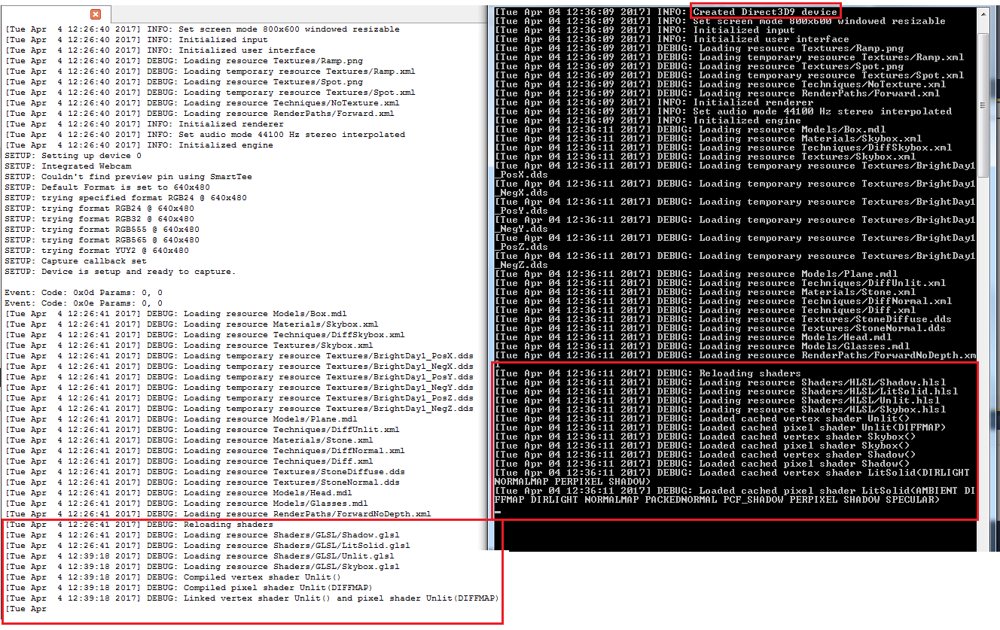

Hi,
I have a very very weird problem with my application.
When I build it with Visual C++, I get the following :

But when I build it with Qt Creator, I get :

As you can see, the head and the glasses are completely black

It’s exactly the same code for the two results, and the CoreData and Data folders are the same too.
While I was writing this, I checked the console output and we can see the difference : GLSL used in Qt and HLSL in Visual.

I don’t know a lot about GLSL, HLSL so I don’t know why it does that and how to correct it. I only know that Qt used openGL.
Any ideas?
Thanks.